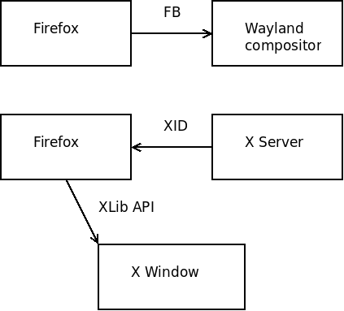
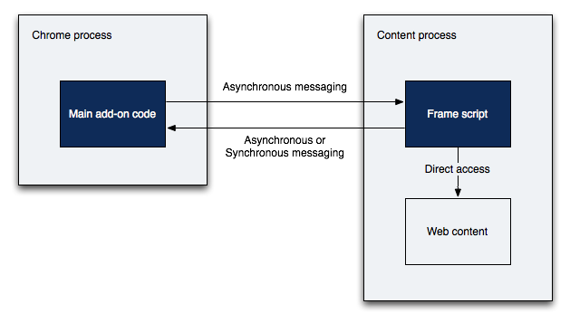

Firefox on Wayland
Martin Stransky
<stransky@redhat.com>
Firefox on Wayland
Wayland architecture
Data flow

Mutter
Kwim
Sway
Mir?
Key part - compositors
Mutter
Kwim
Sway
Mir?
Blocking UI -> e10s
Multiprocess Firefox
Main process - UI (JS)
WebWorker process - web page (JS)
Breaks Add-ons
Blocking UI -> e10s

Indirect DOM access (via IPC and frame scripts)
Indirect Rendering (Shared memory, GPU memory)
Insecure extensions -> restricted
Insecure extensions (same level as UI)
Extension signing (AMO)
Removed binary XPCOM extensions
Separated UI -> changed Web page access
Questions?